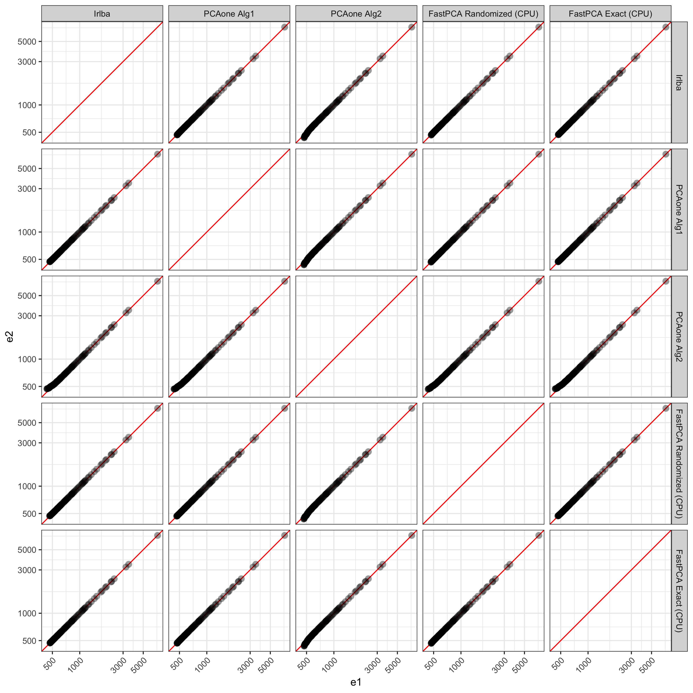
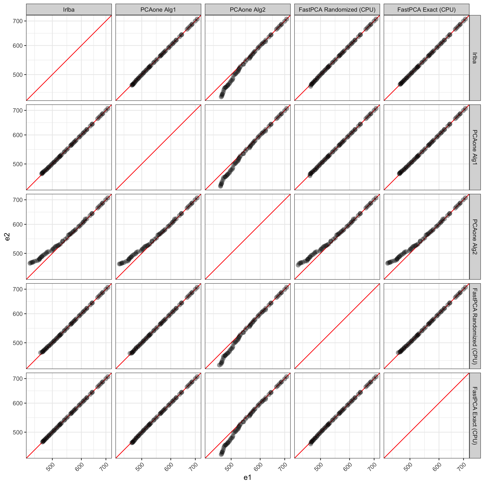

The goal of FastPCA is to speed up calculations of singular value decomposition (SVD) by leveraging the large about of work that has gone into python libraries, specifically PyTorch, for matrix operations. FastPCA offers similar performance to other highly optimized SVD methods in R (see below) while being an order of magnitude faster.
You can install the development version of FastPCA from GitHub with:
# install.packages("devtools")
devtools::install_github("ACSoupir/FastPCA")After installation, need to perform setup by either creating a conda environment with (py)torch and numpy installed, or by running FastPCA::setup_py_env() which will attempt to create an environment and install the necessary packages. I recommend using python 3.10 if you want to leverage tinygrad as have noticed issues with device support with python 3.9.
On Mac if you run into issues, have had luck with installing macrtools with:
# install.packages("remotes")
remotes::install_github("coatless-mac/macrtools")Then, either installing it’s full set:
macrtools::macos_rtools_install()or if the error is gfortran related, uninstalling and installing again with:
macrtools::gfortran_uninstall()
macrtools::gfortran_install(
password = base::getOption("macrtools.password"),
verbose = TRUE
)Using a matrix that contains 98,647 pixels with 2,925 MALDI peaks, I have run the PCAone package with both of their algorithms. For each of the methods, I calculated 100 dimensions from the data using 10 oversampling dimensions as well as 10 power iterations. Additionally, I tested the commonly used irlba pacakge using work=200 for a similar 200 dims in FastPCA and PCAone. The speed difference was:
| User Time (s) | System Time (s) | Elapsed Time (s) | |
|---|---|---|---|
| Irlba | 143.832 | 1.168 | 145.354 |
| PCAone Alg1 | 44.805 | 0.574 | 45.556 |
| PCAone Alg2 | 48.518 | 0.743 | 49.446 |
| FastPCA Randomized (CPU) | 19.898 | 5.227 | 5.306 |
| FastPCA Randomized (GPU) | 0.799 | 0.638 | 0.939 |
| FastPCA Exact (CPU) | 79.694 | 11.564 | 35.819 |
Memory does appear to be greater when using FastPCA over PCAone, but irlba also has higher memory usage than both when estimating top dimensions (except with FastPCA estimating all dimensions; profiled with profmem):
| Memory | |
|---|---|
| Irlba | 660.3 Mb |
| PCAone Alg1 | 77.5 Mb |
| PCAone Alg2 | 77.5 Mb |
| FastPCA Randomized (CPU) | 163.1 Mb |
| FastPCA Randomized (GPU) | 163.1 Mb |
| FastPCA Exact (CPU) | 4.4 Gb |
First exploring the eigenvalues calculated by all methods, on the high end they are all very similar as expected. FastPCA uses essentially the same method as PCAone uses for 'alg1' so its logical that PCAone with 'alg1' produces results much more similar to FastPCA. Interestingly, FastPCA without random projection and power iterations produces results more similar to 'alg1' and FastPCA’s Randomized method. irlba also produces resutls very in line with those from the full output of FastPCA’s exact.

The values start to deviate after ~50 dimensions between PCAone’s 'alg2' compared to FastPCA and irlba.
| Dimension | Irlba | PCAone Alg1 | PCAone Alg2 | FastPCA Randomized (CPU) | FastPCA Exact (CPU) |
|---|---|---|---|---|---|
| PC45 | 708.8466 | 708.8466 | 708.7793 | 708.8466 | 708.8466 |
| PC46 | 699.7265 | 699.7265 | 698.8108 | 699.7265 | 699.7265 |
| PC47 | 686.3112 | 686.3112 | 686.0771 | 686.3112 | 686.3112 |
| PC48 | 684.1567 | 684.1567 | 684.0269 | 684.1567 | 684.1567 |
| PC49 | 677.2385 | 677.2385 | 677.1451 | 677.2385 | 677.2385 |
| PC50 | 670.5312 | 670.5312 | 669.8761 | 670.5312 | 670.5312 |
| PC51 | 664.5754 | 664.5754 | 664.4825 | 664.5754 | 664.5754 |
| PC52 | 642.7470 | 642.7469 | 642.2740 | 642.7469 | 642.7470 |
| PC53 | 641.3331 | 641.3331 | 640.7761 | 641.3329 | 641.3331 |
| PC54 | 634.0135 | 634.0134 | 633.3070 | 634.0134 | 634.0135 |
Visualizing PCs past 45, we can see the discrepancies better. PCAone’s 'alg2' shows more deviation from all other methods. Compared to the Exact solution from FastPCA, irlba, PCAone with 'alg1', and FastPCA’s randomized method all match very well up to the 100 PCs returned.

library(FastPCA)
setup_py_env(method = "conda", envname = "FastPCA", cuda = FALSE)
start_dat = readRDS("smalley_maldi_clustering_for_alex_2025-06-06/27213_all_regions-nonorm_norm_filtered.rds")
dim(start_dat)
#2343 x 98647
processed_dat = FastPCA::prep_matrix(as.matrix(start_dat),
log2 = TRUE,
transpose = TRUE,
scale = TRUE)
dim(processed_dat)
#98647 x 2343
out_svd = FastPCA(processed_dat,
k = 50,
p = 10,
q_iter = 2)
system.time({
out_svd = FastPCA(processed_dat,
k = 50,
p = 10,
q_iter = 2)
})Execution times:
Outputs are singular values. To convert to scores in R, multiply the left singular values by the
torch_pc_scores = get_pc_scores(out_svd)